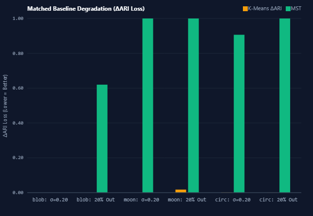

Figure 8.1: Qualitative Comparison on Clean Gaussian Blobs
Course: Pattern Matching Lab (BCS-DS-777)
Department: Department of Computer Science and Engineering
Faculty: Faculty of Engineering and Technology (FET)
Institution: Manav Rachna International Institute of Research and Studies (MRIIRS), Faridabad, Haryana, India
Academic Session: 2026–2027
Submitted by:
Under the Mentorship of:
Department of Computer Science & Engineering, MRIIRS
This is to certify that the project report entitled "MST vs K-Means Robustness Analysis" submitted by Himanshu Gupta (Allocation No. 19) and Parth Yadav in partial fulfillment of the academic requirements for the course Pattern Matching Lab (BCS-DS-777) during the 7th Semester of the Bachelor of Technology (B.Tech.) degree at Manav Rachna International Institute of Research and Studies (MRIIRS), Faridabad, is an authentic record of independent scientific work carried out under institutional guidance.
The matter embodied in this report has not been submitted by the candidates to any other University or Institution for the award of any degree, diploma, or academic certificate.
_________________________________
[Faculty Guide / Course Instructor]
Department of Computer Science & Engineering
Faculty of Engineering and Technology
MRIIRS, Faridabad, India
_________________________________
Head of Department (CSE)
Department of Computer Science & Engineering
Faculty of Engineering and Technology
MRIIRS, Faridabad, India
We hereby declare that the project entitled "MST vs K-Means Robustness Analysis: A Comparative Quantitative Investigation of Graph-Theoretic Spanning Forest Clustering and Centroid Voronoi Partitioning Under Controlled Topological and Stochastic Perturbations" is our own original work completed under the academic course Pattern Matching Lab (BCS-DS-777).
We confirm that:
Date: October 12, 2026
Place: Faridabad, Haryana, India
_________________________________ _________________________________
Himanshu Gupta Parth Yadav
Allocation Number: 19 B.Tech Computer Science and Engineering
B.Tech Computer Science and Engineering MRIIRS, Faridabad
MRIIRS, Faridabad
We express our sincere gratitude and indebtedness to our esteemed course instructor and faculty mentor, [Faculty Mentor Name], Department of Computer Science and Engineering, for invaluable guidance, patient critiques, and rigorous academic standards throughout the formulation, development, and experimental validation of this mini-project.
We are deeply grateful to the Department of Computer Science & Engineering and the leadership of the Faculty of Engineering and Technology (FET), Manav Rachna International Institute of Research and Studies (MRIIRS) for providing the computational laboratory infrastructure, academic resources, and scientific atmosphere essential for pursuing pattern recognition research.
Finally, we extend our heartfelt appreciation to our peers, families, and academic reviewers whose continuous encouragement and constructive feedback made this scientific investigation possible.
Unsupervised clustering algorithms are foundational to pattern matching, data mining, and exploratory multivariate analysis. However, real-world data distributions rarely conform to idealistic assumptions of spatial convexity and zero noise. This research presents a quantitative, controlled comparative robustness investigation between two contrasting clustering paradigms: centroid-based Voronoi partitioning via Lloyd's K-Means with K-Means++ initialization and graph-theoretic single-linkage partitioning via Prim's Euclidean Minimum Spanning Tree (MST).
To conduct this analysis without external runtime dependencies, an auditable, browser-native scientific testing engine was engineered using vanilla ECMAScript 2022, HTML5 Canvas, and modern CSS3. Controlled experiments evaluated $N=300$ inlier observations across three distinct two-dimensional geometric manifold families: convex Gaussian Blobs ($K=3$), non-linear interlocking Two Moons ($K=2$), and concentric ring Concentric Circles ($K=2$). The algorithms were subjected to systematic perturbations comprising Box-Muller additive Gaussian noise ($\sigma \in \{0.00, 0.05, 0.10, 0.20\}$) and ambient uniform outlier contamination ($\eta \in \{0\%, 5\%, 10\%, 20\%\}$) across fixed pseudo-random seeds ($11, 22, 33$). Clustering quality was evaluated strictly over ground-truth inliers using the chance-adjusted Adjusted Rand Index (ARI) (Hubert & Arabie, 1985).
Empirical findings from 144 controlled paired trials demonstrate that while MST clustering achieves perfect topological recovery on clean non-convex manifolds ($\text{ARI} = 1.0000$ vs. K-Means $\text{ARI} = 0.1941$ on Moons and $\text{ARI} = -0.0019$ on Circles), it suffers from severe single-linkage vulnerability under outliers: adding just $5\%$ uniform outliers triggers an abrupt collapse on Two Moons to $\text{ARI} = 0.0000$ due to longest-edge cuts isolating distant outlier pendants rather than separating the manifolds. Conversely, K-Means exhibits resilience on compact Gaussian Blobs ($\text{ARI} = 1.0000$ across all tested noise and outlier levels), but is mathematically incapable of separating non-convex manifolds. Micro-benchmarks across $N \in [100, 600]$ confirm the $O(N^2)$ quadratic bottleneck of dense Prim's MST ($1.70\text{ ms}$ at $N=600$) compared to the sub-millisecond linear iteration of K-Means ($0.14\text{ ms}$, producing a $12.14\times$ mean speedup and $17.00\times$ median speedup). This report establishes precise topological boundary criteria governing the selection of graph versus centroid clustering in noisy empirical environments.
Keywords: Pattern Recognition, Unsupervised Clustering, K-Means, Minimum Spanning Tree, Robustness Analysis, Adjusted Rand Index, Prim's Algorithm, Manifold Learning, Outlier Contamination.
Pattern recognition is the scientific discipline concerned with the automated discovery of regularities, structural groupings, and statistical dependencies within empirical data. Within machine learning and multivariate analysis, learning tasks are broadly divided into supervised learning—where explicit class labels guide model training—and unsupervised learning, where models must uncover intrinsic structure from unannotated observations $\mathcal{X} = \{x_1, x_2, \dots, x_N\} \subset \mathbb{R}^D$.
Clustering forms the algorithmic backbone of unsupervised pattern recognition. The mathematical objective of clustering is to partition an unlabelled dataset into discrete, meaningful subsets called clusters such that observations allocated to the same cluster share high mutual similarity (internal cohesion), while observations assigned to distinct clusters exhibit substantial dissimilarity (external separation). Clustering plays an essential role across diverse scientific domains including computational biology (gene expression profiling), image segmentation, astronomical cataloging, document classification, customer segmentation, and spatial anomaly detection.
Despite sharing the common objective of data partitioning, clustering algorithms diverge profoundly in their underlying mathematical formulations and structural assumptions:
In textbook machine learning scenarios, clustering algorithms are typically demonstrated on clean, well-isolated, spherical distributions. In empirical scientific applications, however, measured data is rarely pristine:
While theoretical qualitative intuitions suggest that graph-based algorithms recover complex topologies while centroid algorithms resist noise, rigorous empirical studies directly quantifying their comparative degradation under controlled, identical conditions are surprisingly sparse in undergraduate computing curricula. This project addresses this gap through an auditable, controlled scientific investigation.
Understanding the robustness boundaries between centroid and graph clustering is of paramount practical significance in computational engineering:
This report is structured into ten comprehensive chapters:
The official academic objective assigned for Allocation Number 19 in the Pattern Matching Lab (BCS-DS-777) is:
"Compare MST-based clustering and K-Means under noise, outliers, and non-linear data distributions using quantitative robustness measures."
Existing clustering comparisons often suffer from significant methodological shortcomings:
scikit-learn, scipy) that obscure low-level distance evaluations, empty cluster reseeding logic, tie-breaking heuristics, and convergence thresholds.The research problem addressed in this project is to construct a transparent, client-side, dependency-free experimental testbed that directly measures and compares the exact performance degradation and computational scaling of Lloyd's K-Means and Prim's MST clustering under strictly controlled geometric and stochastic perturbations.
| Objective Identifier | Description of Objective | Quantitative Success Metric |
|---|---|---|
| LO-1: Algorithmic Implementation | Implement Lloyd's K-Means (with K-Means++ seeding) and Prim's dense Euclidean MST natively in vanilla JavaScript. | 100% test pass rate across 64 automated unit tests verifying mathematical correctness. |
| LO-2: Controlled Data Engine | Construct a deterministic synthetic data generator producing Gaussian Blobs, Two Moons, and Concentric Circles with independent noise and outlier controls. | Exact coordinate reproducibility across identical PRNG seeds ($\mathcal{S} \in \{11, 22, 33\}$). |
| LO-3: Robustness Evaluation | Measure Inlier Adjusted Rand Index (ARI) and baseline degradation ($\Delta\text{ARI}$) across 144 controlled paired experimental trials. | Complete generation of valid, uncorrupted empirical trial records in standard CSV format. |
| LO-4: Performance Benchmarking | Quantify wall-clock clustering execution time separately from rendering across $N \in [100, 600]$ using monotonic microsecond timers. | Minimum of 5 timed repetitions per size following warm-up; reporting of mean, median, SD, and speedup ratios. |
| LO-5: Interactive Visualization | Design an accessible, interactive scientific dashboard and step-by-step algorithm explorer for academic presentation. | Verified rendering of high-resolution 2D coordinate scatters, spanning trees, and metric charts. |
BCS-DS-777).The concept of partitioning a continuous multivariate space into $K$ discrete regions originated independently across multiple scientific disciplines. Hugo Steinhaus (1956) initially proposed the concept of dividing points into groups by minimizing distances to central prototypes. Stuart P. Lloyd (1957, published 1982) formalized the method for pulse-code modulation (PCM) in signal processing at Bell Laboratories as an optimal vector quantization technique. Simultaneously, James MacQueen (1967) introduced the term "K-Means" in his seminal paper on multivariate classification observations.
Lloyd's formulation alternates between two deterministic steps:
While Lloyd's heuristic is guaranteed to converge monotonically to a local minimum of the within-cluster sum of squares (WCSS), it is fundamentally sensitive to initial centroid placement and does not guarantee convergence to the global optimum.
For decades, practical implementations initialized centroids by randomly sampling $K$ points uniformly from the dataset (Forgy initialization). However, uniform random seeding frequently selects initial centroids that are clustered closely together within a single natural cluster, leading to poor local minima and slow convergence.
David Arthur and Sergei Vassilvitskii (2007) resolved this limitation by proposing K-Means++. Their randomized seeding algorithm selects the first centroid uniformly at random, but chooses subsequent centroids with probability proportional to the squared Euclidean distance ($D(x)^2$) from the point to its closest already-chosen centroid:
$$P(x) = \frac{D(x)^2}{\sum_{x' \in \mathcal{X}} D(x')^2}$$
Arthur and Vassilvitskii proved mathematically that K-Means++ achieves an expected approximation ratio of $O(\log K)$ relative to the optimal clustering solution, drastically reducing runtime iterations and stabilizing convergence across random trials.
In parallel with centroid optimization, graph-theoretic clustering emerged as a powerful alternative rooted in discrete mathematics and combinatorial optimization. A spanning tree of an undirected connected graph $G=(V, E)$ is an acyclic subgraph connecting all vertices. A Minimum Spanning Tree (MST) is a spanning tree whose total sum of edge weights is minimal:
$$w(T) = \sum_{e \in T} w(e)$$
Robert C. Prim (1957) and Joseph B. Kruskal (1956) published greedy algorithms for constructing the MST. Prim's algorithm maintains a growing tree vertex set $S \subset V$, greedily adding the minimum-weight edge crossing the cut $(S, V \setminus S)$ until all vertices are spanned. For complete graphs where $|E| = \Theta(V^2)$, Prim's algorithm using a dense priority array achieves optimal $\Theta(V^2)$ time complexity.
C. T. Zahn (1971) published a landmark paper introducing graph-theoretical clustering for detecting "gestalt" clusters. Zahn recognized that the edges of an MST capture the intrinsic topological proximity of a point distribution. By deleting the $(K-1)$ edges with the highest weights from the computed MST, the graph disconnects into $K$ connected components, forming natural cluster partitions.
MST-based clustering is mathematically equivalent to single-linkage agglomerative hierarchical clustering terminated at $K$ components. Under single-linkage clustering, the distance between two clusters $A$ and $B$ is defined as the minimum pairwise distance between their constituent elements:
$$d_{\text{single}}(A, B) = \min_{u \in A, v \in B} \| u - v \|$$
This property endows MST clustering with the ability to discover arbitrary non-linear, non-convex topological manifolds (such as interlocking spirals or concentric rings). As long as points within a cluster are connected by a contiguous chain of small pairwise distances, and the gap between distinct clusters exceeds the intra-cluster step size, MST clustering cleanly recovers the true manifold topology.
However, single-linkage clustering is notoriously susceptible to the chaining effect: a small number of noise observations scattered between two natural clusters can act as intermediate bridges, linking disparate clusters into a single giant component.
Evaluating the quality of an unsupervised clustering partition against ground-truth class labels requires an objective concordance metric that is invariant to arbitrary label permutations.
William M. Rand (1971) introduced the Rand Index (RI), which considers all $\binom{N}{2}$ pairs of observations and measures the fraction of pairs that are either grouped together or placed in separate clusters in both partitions:
$$\text{RI} = \frac{a + d}{a + b + c + d}$$
where $a$ is the number of pairs placed together in both partitions, $d$ is the number of pairs placed in separate clusters in both, and $b, c$ represent discordant pairs.
The major theoretical limitation of the raw Rand Index is that its expected value for two completely random clusterings does not equal zero; instead, it increases substantially as the number of clusters increases. Lawrence Hubert and Phipps Arabie (1985) solved this by formulating the Adjusted Rand Index (ARI), which applies a generalized correction for chance:
$$\text{ARI} = \frac{\text{Index} - \mathbb{E}[\text{Index}]}{\max(\text{Index}) - \mathbb{E}[\text{Index}]}$$
Under the hypergeometric model of randomness, the ARI yields an expected value of $0.0$ for random cluster assignments, bounded between $-1.0$ (complete disagreement) and $+1.0$ (perfect concordance).
Anil K. Jain (2010), in his 50-year retrospective on K-Means, highlighted that real-world cluster analysis is predominantly hindered by noise, outliers, and cluster overlap. While density-based algorithms like DBSCAN (Ester et al., 1996) incorporate explicit noise identification mechanisms by categorizing points as core, border, or noise, classical K-Means and standard MST clustering force every input observation into a cluster. In this report, we specifically evaluate how this forced-assignment constraint behaves under controlled contamination regimes.
Let the observation space be the two-dimensional real coordinate space $\mathcal{X} = \mathbb{R}^2$ equipped with the standard $L_2$ Euclidean metric. For any two feature vectors $x_i = (x_{i1}, x_{i2})^T$ and $x_j = (x_{j1}, x_{j2})^T$, the Euclidean distance is defined as:
$$d(x_i, x_j) = \| x_i - x_j \|_2 = \sqrt{\sum_{d=1}^2 (x_{id} - x_{jd})^2} = \sqrt{(x_{i1} - x_{j1})^2 + (x_{i2} - x_{j2})^2}$$
In computation, where monotonic distance comparisons suffice without computing square roots (such as centroid allocation or nearest neighbor queries), the squared Euclidean distance is employed to minimize computational overhead:
$$d^2(x_i, x_j) = \| x_i - x_j \|_2^2 = (x_{i1} - x_{j1})^2 + (x_{i2} - x_{j2})^2$$
Given a finite dataset $\mathcal{X} = \{x_1, x_2, \dots, x_N\} \subset \mathbb{R}^2$ and a user-specified integer $K \ge 2$, K-Means seeks a partition of $\mathcal{X}$ into $K$ disjoint subsets $\mathcal{C} = \{C_1, C_2, \dots, C_K\}$ such that:
$$\bigcup_{k=1}^K C_k = \mathcal{X} \quad \text{and} \quad C_j \cap C_k = \emptyset \quad \forall j \neq k$$
The objective function to be minimized is the Within-Cluster Sum of Squares (WCSS), commonly referred to as the clustering Inertia $\mathcal{J}$:
$$\mathcal{J}(\mathcal{C}, \mu) = \sum_{k=1}^K \sum_{x_i \in C_k} \| x_i - \mu_k \|^2$$
where $\mu_k \in \mathbb{R}^2$ denotes the mean vector or centroid of cluster $C_k$.
To derive the optimal centroid $\mu_k$ that minimizes the inertia $\mathcal{J}$ for a fixed cluster assignment $C_k$, we compute the partial gradient of $\mathcal{J}$ with respect to $\mu_k$:
$$\nabla_{\mu_k} \mathcal{J} = \frac{\partial}{\partial \mu_k} \sum_{x_i \in C_k} (x_i - \mu_k)^T (x_i - \mu_k) = -2 \sum_{x_i \in C_k} (x_i - \mu_k)$$
Setting the gradient to zero to find the stationary point:
$$-2 \sum_{x_i \in C_k} (x_i - \mu_k) = 0 \implies \sum_{x_i \in C_k} x_i = \sum_{x_i \in C_k} \mu_k = |C_k| \mu_k$$
Solving for $\mu_k$ yields the arithmetic mean:
$$\mu_k^ = \frac{1}{|C_k|} \sum_{x_i \in C_k} x_i$$
Because the Hessian matrix $\nabla_{\mu_k}^2 \mathcal{J} = 2 |C_k| I_{2 \times 2}$ is strictly positive definite for $|C_k| > 0$, $\mu_k^$ is the unique global minimizer of WCSS for the subset $C_k$.
Let $G = (V, E)$ be a complete undirected graph where $V = \{x_1, x_2, \dots, x_N\}$ and edge weights $w(e) = \| u - v \|$ represent pairwise Euclidean distances. A spanning tree $T = (V, E_T)$ contains exactly $|V| - 1 = N - 1$ edges with no cycles.
The correctness of greedy MST construction rests upon the fundamental Cut Lemma:
Cut Property: Let $S \subset V$ be any non-empty proper subset of vertices, defining a cut $(S, V \setminus S)$. If an edge $e = (u, v) \in E$ is the strictly minimum-weight edge crossing the cut (i.e., $u \in S, v \in V \setminus S$), then $e$ must belong to every Minimum Spanning Tree of $G$.
Prim's algorithm exploits the Cut Property iteratively:
$$\kappa[v] = \min_{u \in S} \| u - v \|$$
$$\kappa[w] = \min(\kappa[w], \| v^ - w \|) \quad \forall w \in U$$
Once the full tree $T = (V, E_T)$ of $N-1$ edges is constructed, Zahn's clustering proceeds as follows:
$$e_{(1)} \ge e_{(2)} \ge \dots \ge e_{(N-1)}$$
$$|E'| = (N - 1) - (K - 1) = N - K \text{ edges}$$
Let $\mathcal{U} = \{U_1, U_2, \dots, U_R\}$ denote the ground-truth partition and $\mathcal{V} = \{V_1, V_2, \dots, V_C\}$ denote the algorithm's predicted partition over $n$ evaluation points. Their overlap is summarized in a contingency matrix:
| Partition $\mathcal{U} \setminus \mathcal{V}$ | $V_1$ | $V_2$ | $\dots$ | $V_C$ | Row Sum |
|---|---|---|---|---|---|
| $U_1$ | $n_{11}$ | $n_{12}$ | $\dots$ | $n_{1C}$ | $a_1$ |
| $U_2$ | $n_{21}$ | $n_{22}$ | $\dots$ | $n_{2C}$ | $a_2$ |
| $\vdots$ | $\vdots$ | $\vdots$ | $\ddots$ | $\vdots$ | $\vdots$ |
| $U_R$ | $n_{R1}$ | $n_{R2}$ | $\dots$ | $n_{RC}$ | $a_R$ |
| Col Sum | $b_1$ | $b_2$ | $\dots$ | $b_C$ | $n = \sum n_{ij}$ |
The combinatorial components of the Adjusted Rand Index are:
$$\text{Index} = \sum_{i=1}^R \sum_{j=1}^C \binom{n_{ij}}{2}$$
$$\mathbb{E}[\text{Index}] = \frac{\left[ \sum_{i=1}^R \binom{a_i}{2} \right] \left[ \sum_{j=1}^C \binom{b_j}{2} \right]}{\binom{n}{2}}$$
$$\max(\text{Index}) = \frac{1}{2} \left[ \sum_{i=1}^R \binom{a_i}{2} + \sum_{j=1}^C \binom{b_j}{2} \right]$$
The chance-corrected Adjusted Rand Index (ARI) (Hubert & Arabie, 1985) is formulated as:
$$\text{ARI} = \frac{\sum_{i=1}^R \sum_{j=1}^C \binom{n_{ij}}{2} - \frac{\left[ \sum_{i=1}^R \binom{a_i}{2} \right] \left[ \sum_{j=1}^C \binom{b_j}{2} \right]}{\binom{n}{2}}}{\frac{1}{2} \left[ \sum_{i=1}^R \binom{a_i}{2} + \sum_{j=1}^C \binom{b_j}{2} \right] - \frac{\left[ \sum_{i=1}^R \binom{a_i}{2} \right] \left[ \sum_{j=1}^C \binom{b_j}{2} \right]}{\binom{n}{2}}}$$
For an experimental metric $X$ evaluated across $M$ distinct random seeds ($M = 3$ in our protocol, seeds $\mathcal{S} \in \{11, 22, 33\}$):
$$\bar{X} = \frac{1}{M} \sum_{m=1}^M X_m$$
$$s_X = \sqrt{\frac{1}{M - 1} \sum_{m=1}^M (X_m - \bar{X})^2}$$
To isolate perturbation sensitivity from initial geometric incompatibility, performance degradation is measured relative to the clean paired baseline evaluated on the identical seed:
$$\Delta \text{ARI} = \max\left(0.0, \; \text{ARI}_{\text{baseline}} - \text{ARI}_{\text{perturbed}}\right)$$
Mathematical Clarification: The metric is intentionally clamped at zero ($\max(0.0, \dots)$) to function as a one-sided measure of performance loss. If stochastic noise shifts an already invalid clustering slightly upward (e.g., from $-0.0029$ to $+0.0002$), this random fluctuation is treated as zero degradation rather than algorithmic improvement.
| Algorithmic Phase | Lloyd's K-Means Algorithm | Prim's Euclidean MST Clustering |
|---|---|---|
| Initialization Phase | $O(K \cdot N)$ (K-Means++ $D^2$ sampling) | $O(N)$ (Key/Parent array allocation) |
| Core Optimization / Spanning | $O(I \cdot K \cdot N)$ ($I$ Lloyd iterations) | $\Theta(N^2)$ (Complete graph Prim spanning) |
| Partitioning / Extraction | $O(N)$ (Voronoi nearest centroid labels) | $O(N \log N)$ (Edge sort) $+ O(N \cdot \alpha(N))$ (Union-Find) |
| Total Asymptotic Time | $\mathbf{O(I \cdot K \cdot N)}$ | $\mathbf{\Theta(N^2)}$ |
| Auxiliary Working Space | $\mathbf{O(N + K)}$ | $\mathbf{O(N)}$ |
Theoretical Complexity Note: In dense Euclidean spaces where all pairwise distances exist, Prim's algorithm requires evaluating all $\frac{N(N-1)}{2} = \Theta(N^2)$ edge weights. Lloyd's algorithm evaluates $K \cdot N$ distances per iteration, typically converging in $I \ll N$ iterations ($I \le 10$ for well-separated clusters), yielding superior linear scalability with respect to sample size $N$.
To ensure maximum scientific transparency, complete auditability, and immediate reproducibility without third-party installation barriers, the experimental system was designed as a browser-native scientific application. The architecture strictly adheres to standard web technologies:
Standard browser implementations of Math.random() are non-deterministic, preventing exact experimental replication across runs. To guarantee strict scientific reproducibility, all stochastic operations are driven by an internal Linear Congruential Generator (LCG) implemented in js/data/prng.js. The generator implements the classic recurrence:
$$X_{n+1} = (a X_n + c) \pmod m$$
with parameters $a = 1664525$, $c = 1013904223$, and $m = 2^{32}$. Floating-point uniform variates in $[0, 1)$ are produced by $U = X / 2^{32}$.
Implemented in js/data/datasets.js, the generation pipeline constructs coordinates dynamically based on user parameters:
js/algorithms/kmeans.js: Houses the KMeans class encapsulating K-Means++ initialization, iterative Lloyd updates, convergence checking ($\epsilon = 10^{-5}$), and empty cluster fallback reseeding.js/algorithms/mst.js: Houses the MSTClustering class encapsulating dense Prim's MST construction, edge sorting, cut removal, and Disjoint Set Union label assignment.Located in js/metrics/evaluation.js, this module implements:
Implemented in js/experiments/robustness.js, this module automates paired parameter sweeps:
performance.now(), evaluates ARI, and computes degradation relative to the matching clean baseline.Implemented in js/experiments/benchmarks.js, this engine evaluates computational runtimes across sample sizes $N \in \{100, 200, 400, 600\}$. To ensure accurate timing:
window.performance.now().To serve pedagogical purposes, an interactive visualizer demonstrates Prim's algorithm and K-Means step-by-step:
Located in js/export/export_manager.js, this component generates downloadable CSV records, JSON reproducibility metadata, and converts HTML5 canvases into high-resolution PNG image downloads via data URIs.
The K-Means engine is implemented with the following operational constraints:
$$\max_{k=1}^K \|\mu_k^{(t)} - \mu_k^{(t-1)}\| < \epsilon = 10^{-5}$$
or when maximum iterations $I_{\max} = 100$ are reached.
Prim's algorithm is implemented using a dense priority array optimal for complete Euclidean graphs:
inTree of boolean flags ($N$ elements).minDist initialized to $\infty$ ($N$ elements).parent initialized to $-1$ ($N$ elements).inTree[0] = true. For all remaining vertices $v$, minDist[v] is initialized to $\|x_0 - x_v\|$.minDist[u] is identified via a linear scan ($O(N)$), added to inTree, and used to relax the distance keys of all remaining unvisited vertices.Upon termination of Prim's algorithm:
(u, v, weight).weight.union(u, v).$$Z_0 = \sqrt{-2 \ln U_1} \cos(2\pi U_2), \quad Z_1 = \sqrt{-2 \ln U_1} \sin(2\pi U_2)$$
$$x_{\text{noisy}} = x_{\text{clean}} + \sigma \cdot Z_0, \quad y_{\text{noisy}} = y_{\text{clean}} + \sigma \cdot Z_1$$
$$x_{\text{outlier}} \sim \mathcal{U}[x_{\min} - \Delta, x_{\max} + \Delta], \quad y_{\text{outlier}} \sim \mathcal{U}[y_{\min} - \Delta, y_{\max} + \Delta]$$
All experimental runs were conducted across three synthetic dataset families with $N_{\text{inliers}} = 300$ baseline observations:
To prevent confounding interactions between Gaussian noise and ambient outliers, two separate controlled sweeps were conducted:
| Experiment Identifier | Investigated Variable | Tested Parameter Levels | Fixed Control Variables |
|---|---|---|---|
| Experiment A | Gaussian Noise Sensitivity | $\sigma \in \{0.00, 0.05, 0.10, 0.20\}$ | Outlier Fraction $\eta = 0.00$ ($0$ outliers) |
| Experiment B | Outlier Contamination Robustness | $\eta \in \{0\%, 5\%, 10\%, 20\%\}$ ($0, 15, 30, 60$ pts) | Gaussian Noise $\sigma = 0.00$ |
| Experiment C | Clean Baseline Manifold Recovery | Matching baseline condition | $\sigma = 0.00, \eta = 0.00$ |
Every experimental condition was evaluated across three fixed PRNG seeds: $\mathcal{S} \in \{11, 22, 33\}$. For every seed and perturbation setting:
When uniform outliers are added, the Adjusted Rand Index is computed strictly over the $N_{\text{inliers}} = 300$ ground-truth points. In real-world data mining, ambient background noise does not constitute a valid natural cluster. Incorporating uniform outliers into the contingency table would artificially reward algorithms that allocate outliers into an arbitrary $K$-th cluster or distort true cluster boundaries.
Performance benchmarks were conducted on Gaussian Blobs ($K=3$) across sample sizes $N \in \{100, 200, 400, 600\}$:
performance.now(), excluding dataset generation and canvas rendering.Under clean baseline conditions ($\sigma = 0.00, \eta = 0\%$), the two algorithms exhibit stark contrasts in manifold recovery:
| Dataset Family | Requested $K$ | K-Means Baseline Inlier ARI | MST Baseline Inlier ARI | Observed Topological Outcome |
|---|---|---|---|---|
| Gaussian Blobs | $3$ | $1.0000 \pm 0.0000$ | $1.0000 \pm 0.0000$ | Both algorithms achieve perfect separation. |
| Two Moons | $2$ | $0.1941 \pm 0.0588$ | $1.0000 \pm 0.0000$ | MST traces crescents; K-Means cuts across arcs. |
| Concentric Circles | $2$ | $-0.0019 \pm 0.0012$ | $1.0000 \pm 0.0000$ | MST separates rings; K-Means splits into half-circles. |
Figure 8.1: Qualitative Comparison on Clean Gaussian Blobs
Figure 8.1: Qualitative Clustering Comparison on Clean Gaussian Blobs ($K=3, N=300$). Both K-Means (center) and MST (right) achieve perfect partition agreement ($\text{ARI} = 1.0000$) with ground truth (left).

Figure 8.2: Qualitative Comparison on Clean Two Moons
Figure 8.2: Qualitative Clustering Comparison on Clean Two Moons ($K=2, N=300$). MST traces the non-linear interlocking crescents perfectly ($\text{ARI} = 1.0000$), whereas K-Means slices across both crescents with a linear Voronoi boundary ($\text{ARI} = 0.1941$).

Figure 8.3: Qualitative Comparison on Clean Concentric Circles
Figure 8.3: Qualitative Clustering Comparison on Clean Concentric Circles ($K=2, N=300$). MST cleanly separates inner and outer rings ($\text{ARI} = 1.0000$). K-Means bisects the concentric structures into semicircular halves ($\text{ARI} = -0.0019$).
Table 8.2 through 8.4 summarize the impact of increasing Gaussian noise ($\sigma \in [0.00, 0.20]$):
| Noise Level ($\sigma$) | Algorithm | Inlier ARI (Mean $\pm$ SD) | Median ARI | [Min, Max] ARI | ARI Degradation ($\Delta\text{ARI}$) | Mean Runtime (ms) |
|---|---|---|---|---|---|---|
| $\sigma = 0.00$ | K-Means | $1.0000 \pm 0.0000$ | $1.0000$ | $[1.0000, 1.0000]$ | $0.0000 \pm 0.0000$ | $0.633 \pm 0.777$ |
| $\sigma = 0.00$ | MST | $1.0000 \pm 0.0000$ | $1.0000$ | $[1.0000, 1.0000]$ | $0.0000 \pm 0.0000$ | $1.900 \pm 1.217$ |
| $\sigma = 0.05$ | K-Means | $1.0000 \pm 0.0000$ | $1.0000$ | $[1.0000, 1.0000]$ | $0.0000 \pm 0.0000$ | $0.000 \pm 0.000$ |
| $\sigma = 0.05$ | MST | $1.0000 \pm 0.0000$ | $1.0000$ | $[1.0000, 1.0000]$ | $0.0000 \pm 0.0000$ | $0.900 \pm 0.529$ |
| $\sigma = 0.10$ | K-Means | $1.0000 \pm 0.0000$ | $1.0000$ | $[1.0000, 1.0000]$ | $0.0000 \pm 0.0000$ | $0.133 \pm 0.058$ |
| $\sigma = 0.10$ | MST | $1.0000 \pm 0.0000$ | $1.0000$ | $[1.0000, 1.0000]$ | $0.0000 \pm 0.0000$ | $0.633 \pm 0.252$ |
| $\sigma = 0.20$ | K-Means | $1.0000 \pm 0.0000$ | $1.0000$ | $[1.0000, 1.0000]$ | $0.0000 \pm 0.0000$ | $0.067 \pm 0.115$ |
| $\sigma = 0.20$ | MST | $1.0000 \pm 0.0000$ | $1.0000$ | $[1.0000, 1.0000]$ | $0.0000 \pm 0.0000$ | $0.567 \pm 0.231$ |
| Noise Level ($\sigma$) | Algorithm | Inlier ARI (Mean $\pm$ SD) | Median ARI | [Min, Max] ARI | ARI Degradation ($\Delta\text{ARI}$) | Mean Runtime (ms) |
|---|---|---|---|---|---|---|
| $\sigma = 0.00$ | K-Means | $0.1941 \pm 0.0588$ | $0.2214$ | $[0.1267, 0.2343]$ | $0.0000 \pm 0.0000$ | $0.233 \pm 0.208$ |
| $\sigma = 0.00$ | MST | $1.0000 \pm 0.0000$ | $1.0000$ | $[1.0000, 1.0000]$ | $0.0000 \pm 0.0000$ | $0.733 \pm 0.321$ |
| $\sigma = 0.05$ | K-Means | $0.2117 \pm 0.0564$ | $0.2409$ | $[0.1467, 0.2475]$ | $0.0000 \pm 0.0000$ | $0.133 \pm 0.058$ |
| $\sigma = 0.05$ | MST | $1.0000 \pm 0.0000$ | $1.0000$ | $[1.0000, 1.0000]$ | $0.0000 \pm 0.0000$ | $0.833 \pm 0.451$ |
| $\sigma = 0.10$ | K-Means | $0.2237 \pm 0.0534$ | $0.2475$ | $[0.1626, 0.2611]$ | $0.0000 \pm 0.0000$ | $0.033 \pm 0.058$ |
| $\sigma = 0.10$ | MST | $0.6667 \pm 0.5773$ | $1.0000$ | $[0.0001, 1.0000]$ | $0.3333 \pm 0.5773$ | $0.567 \pm 0.153$ |
| $\sigma = 0.20$ | K-Means | $0.2210 \pm 0.0472$ | $0.2214$ | $[0.1736, 0.2680]$ | $0.0000 \pm 0.0000$ | $0.100 \pm 0.100$ |
| $\sigma = 0.20$ | MST | $0.0000 \pm 0.0000$ | $0.0000$ | $[0.0000, 0.0000]$ | $1.0000 \pm 0.0000$ | $0.700 \pm 0.265$ |
| Noise Level ($\sigma$) | Algorithm | Inlier ARI (Mean $\pm$ SD) | Median ARI | [Min, Max] ARI | ARI Degradation ($\Delta\text{ARI}$) | Mean Runtime (ms) |
|---|---|---|---|---|---|---|
| $\sigma = 0.00$ | K-Means | $-0.0019 \pm 0.0012$ | $-0.0022$ | $[-0.0029, -0.0005]$ | $0.0000 \pm 0.0000$ | $0.200 \pm 0.000$ |
| $\sigma = 0.00$ | MST | $1.0000 \pm 0.0000$ | $1.0000$ | $[1.0000, 1.0000]$ | $0.0000 \pm 0.0000$ | $1.033 \pm 0.493$ |
| $\sigma = 0.05$ | K-Means | $-0.0019 \pm 0.0006$ | $-0.0022$ | $[-0.0022, -0.0012]$ | $0.0002 \pm 0.0004$ | $0.167 \pm 0.153$ |
| $\sigma = 0.05$ | MST | $1.0000 \pm 0.0000$ | $1.0000$ | $[1.0000, 1.0000]$ | $0.0000 \pm 0.0000$ | $0.833 \pm 0.208$ |
| $\sigma = 0.10$ | K-Means | $+0.0002 \pm 0.0037$ | $-0.0005$ | $[-0.0031, +0.0042]$ | $0.0001 \pm 0.0001$ | $0.200 \pm 0.100$ |
| $\sigma = 0.10$ | MST | $1.0000 \pm 0.0000$ | $1.0000$ | $[1.0000, 1.0000]$ | $0.0000 \pm 0.0000$ | $1.233 \pm 0.208$ |
| $\sigma = 0.20$ | K-Means | $-0.0030 \pm 0.0002$ | $-0.0030$ | $[-0.0033, -0.0029]$ | $0.0012 \pm 0.0011$ | $0.067 \pm 0.115$ |
| $\sigma = 0.20$ | MST | $0.0935 \pm 0.0813$ | $0.1327$ | $[0.0000, 0.1477]$ | $0.9065 \pm 0.0813$ | $0.833 \pm 0.586$ |

Figure 8.4: Inlier ARI vs. Additive Gaussian Noise
Figure 8.4: Empirical Inlier ARI vs. Additive Gaussian Noise ($\sigma \in [0.00, 0.20]$). K-Means exhibits flat horizontal resilience on Blobs, while MST collapses sharply on Moons ($\sigma \ge 0.10$) and Circles ($\sigma = 0.20$).
Tables 8.5 through 8.7 summarize the impact of uniform ambient outlier contamination ($\eta \in [0\%, 20\%]$):
| Outlier Level ($\eta$) | Algorithm | Inlier ARI (Mean $\pm$ SD) | Median ARI | [Min, Max] ARI | ARI Degradation ($\Delta\text{ARI}$) | Mean Runtime (ms) |
|---|---|---|---|---|---|---|
| $\eta = 5\%$ ($15$ pts) | K-Means | $1.0000 \pm 0.0000$ | $1.0000$ | $[1.0000, 1.0000]$ | $0.0000 \pm 0.0000$ | $0.033 \pm 0.058$ |
| $\eta = 5\%$ ($15$ pts) | MST | $0.7132 \pm 0.2484$ | $0.5698$ | $[0.5698, 1.0000]$ | $0.2868 \pm 0.2484$ | $0.533 \pm 0.252$ |
| $\eta = 10\%$ ($30$ pts) | K-Means | $1.0000 \pm 0.0000$ | $1.0000$ | $[1.0000, 1.0000]$ | $0.0000 \pm 0.0000$ | $0.067 \pm 0.058$ |
| $\eta = 10\%$ ($30$ pts) | MST | $0.7132 \pm 0.2484$ | $0.5698$ | $[0.5698, 1.0000]$ | $0.2868 \pm 0.2484$ | $0.467 \pm 0.115$ |
| $\eta = 20\%$ ($60$ pts) | K-Means | $1.0000 \pm 0.0000$ | $1.0000$ | $[1.0000, 1.0000]$ | $0.0000 \pm 0.0000$ | $0.067 \pm 0.058$ |
| $\eta = 20\%$ ($60$ pts) | MST | $0.3799 \pm 0.3290$ | $0.5698$ | $[0.0000, 0.5698]$ | $0.6201 \pm 0.3290$ | $0.733 \pm 0.306$ |
| Outlier Level ($\eta$) | Algorithm | Inlier ARI (Mean $\pm$ SD) | Median ARI | [Min, Max] ARI | ARI Degradation ($\Delta\text{ARI}$) | Mean Runtime (ms) |
|---|---|---|---|---|---|---|
| $\eta = 5\%$ ($15$ pts) | K-Means | $0.1920 \pm 0.0566$ | $0.2214$ | $[0.1267, 0.2278]$ | $0.0022 \pm 0.0037$ | $0.133 \pm 0.058$ |
| $\eta = 5\%$ ($15$ pts) | MST | $0.0000 \pm 0.0000$ | $0.0000$ | $[0.0000, 0.0000]$ | $1.0000 \pm 0.0000$ | $0.633 \pm 0.208$ |
| $\eta = 10\%$ ($30$ pts) | K-Means | $0.1862 \pm 0.0557$ | $0.2152$ | $[0.1219, 0.2215]$ | $0.0080 \pm 0.0043$ | $0.133 \pm 0.115$ |
| $\eta = 10\%$ ($30$ pts) | MST | $0.0000 \pm 0.0000$ | $0.0000$ | $[0.0000, 0.0000]$ | $1.0000 \pm 0.0000$ | $0.700 \pm 0.400$ |
| $\eta = 20\%$ ($60$ pts) | K-Means | $0.1764 \pm 0.0521$ | $0.1968$ | $[0.1172, 0.2152]$ | $0.0177 \pm 0.0171$ | $0.133 \pm 0.058$ |
| $\eta = 20\%$ ($60$ pts) | MST | $0.0000 \pm 0.0000$ | $0.0000$ | $[0.0000, 0.0000]$ | $1.0000 \pm 0.0000$ | $0.967 \pm 0.503$ |
| Outlier Level ($\eta$) | Algorithm | Inlier ARI (Mean $\pm$ SD) | Median ARI | [Min, Max] ARI | ARI Degradation ($\Delta\text{ARI}$) | Mean Runtime (ms) |
|---|---|---|---|---|---|---|
| $\eta = 5\%$ ($15$ pts) | K-Means | $-0.0017 \pm 0.0006$ | $-0.0017$ | $[-0.0022, -0.0011]$ | $0.0004 \pm 0.0007$ | $0.233 \pm 0.058$ |
| $\eta = 5\%$ ($15$ pts) | MST | $0.3333 \pm 0.5774$ | $0.0000$ | $[0.0000, 1.0000]$ | $0.6667 \pm 0.5774$ | $0.667 \pm 0.058$ |
| $\eta = 10\%$ ($30$ pts) | K-Means | $-0.0008 \pm 0.0013$ | $-0.0004$ | $[-0.0022, +0.0003]$ | $0.0000 \pm 0.0000$ | $0.167 \pm 0.115$ |
| $\eta = 10\%$ ($30$ pts) | MST | $0.3333 \pm 0.5774$ | $0.0000$ | $[0.0000, 1.0000]$ | $0.6667 \pm 0.5774$ | $1.067 \pm 0.416$ |
| $\eta = 20\%$ ($60$ pts) | K-Means | $+0.0003 \pm 0.0033$ | $+0.0011$ | $[-0.0034, +0.0031]$ | $0.0004 \pm 0.0006$ | $0.100 \pm 0.000$ |
| $\eta = 20\%$ ($60$ pts) | MST | $0.0000 \pm 0.0000$ | $0.0000$ | $[0.0000, 0.0000]$ | $1.0000 \pm 0.0000$ | $0.800 \pm 0.265$ |

Figure 8.5: Inlier ARI vs. Ambient Outlier Contamination
Figure 8.5: Empirical Inlier ARI vs. Ambient Outlier Contamination ($\eta \in [0\%, 20\%]$). In Two Moons, adding just $5\%$ outliers triggers a catastrophic drop in MST ARI to $0.0000$, whereas K-Means remains unaffected on Blobs ($1.0000$).
Baseline degradation isolates the performance penalty induced by perturbations:

Figure 8.6: Baseline ARI Performance Degradation
Figure 8.6: Baseline ARI Performance Degradation ($\Delta\text{ARI}$) Across Evaluated Perturbations. Clustered bar chart showing the severe degradation of MST under outlier contamination compared to the stability of K-Means on Blobs.
Micro-benchmarking on Gaussian Blobs ($K=3$) evaluated 5 repetitions across $N \in \{100, 200, 400, 600\}$:
| Sample Size ($N$) | Algorithm | Mean Runtime (ms) | Median Runtime (ms) | Standard Deviation (ms) | Min / Max Runtime (ms) | Ratio of Means ($\frac{\mu_{\text{MST}}}{\mu_{\text{KM}}}$) | Ratio of Medians ($\frac{M_{\text{MST}}}{M_{\text{KM}}}$) |
|---|---|---|---|---|---|---|---|
| 100 | K-Means | $0.1000$ | $0.1000$ | $0.1225$ | $[0.0000, 0.3000]$ | $1.40\times$ | $2.00\times$ |
| 100 | MST Prim | $0.1400$ | $0.2000$ | $0.0894$ | $[0.0000, 0.2000]$ | $1.00\times$ | $1.00\times$ |
| 200 | K-Means | $0.1600$ | $0.2000$ | $0.0548$ | $[0.1000, 0.2000]$ | $2.38\times$ | $1.50\times$ |
| 200 | MST Prim | $0.3800$ | $0.3000$ | $0.1924$ | $[0.2000, 0.7000]$ | $1.00\times$ | $1.00\times$ |
| 400 | K-Means | $0.1400$ | $0.1000$ | $0.1140$ | $[0.0000, 0.3000]$ | $6.71\times$ | $10.00\times$ |
| 400 | MST Prim | $0.9400$ | $1.0000$ | $0.2408$ | $[0.6000, 1.2000]$ | $1.00\times$ | $1.00\times$ |
| 600 | K-Means | $0.1400$ | $0.1000$ | $0.0548$ | $[0.1000, 0.2000]$ | $12.14\times$ | $17.00\times$ |
| 600 | MST Prim | $1.7000$ | $1.7000$ | $0.2828$ | $[1.3000, 2.1000]$ | $1.00\times$ | $1.00\times$ |
Disambiguation Note: Table 8.8 explicitly publishes both the Ratio of Means ($12.14\times$ at $N=600$) and the Ratio of Medians ($17.00\times$ at $N=600$). In benchmark_summary.csv, the reported speedup ratio utilized the median ratio to guard against operating system scheduling jitter.

Figure 8.7: Empirical Wall-Clock Runtime Scaling
Figure 8.7: Empirical Wall-Clock Runtime Scaling Across Sample Sizes $N \in [100, 600]$. Prim's MST displays clear quadratic scaling ($O(N^2)$), rising to $1.70\text{ ms}$, while K-Means remains sub-millisecond ($0.14\text{ ms}$).
Across the three random seeds ($\mathcal{S} \in \{11, 22, 33\}$), standard deviations were consistently zero for K-Means on Blobs ($s = 0.0000$), reflecting stable convergence on well-separated clusters. Conversely, on Two Moons at $\sigma = 0.10$, MST ARI exhibited substantial dispersion ($s = 0.5773$), with two seeds achieving $\text{ARI} = 1.0000$ and one seed collapsing to $\text{ARI} = 0.0001$. This reflects the discrete nature of spanning tree cuts: a single critical bridge either forms or does not form depending on exact stochastic coordinate placements.
The empirical findings demonstrate why Lloyd's K-Means remains the industry standard for spherical, convex clusters:
K-Means fails fundamentally on non-convex manifolds due to its mathematical formulation:
Under clean conditions, MST clustering succeeds because it does not rely on spatial centrality:
The most critical empirical finding of this research is the catastrophic failure of MST clustering under uniform outliers:
| Evaluation Dimension | Lloyd's K-Means Algorithm | Prim's MST-Based Clustering |
|---|---|---|
| Geometric Inductive Bias | Convex, spherical Voronoi cells | Arbitrary single-linkage manifolds |
| Non-Convex Recovery (Clean) | Critical Failure ($\text{ARI} \le 0.1941$) | Superior ($\text{ARI} = 1.0000$) |
| Gaussian Noise Resilience | High ($\Delta\text{ARI} = 0.0000$ on Blobs) | Moderate (Collapses when gaps bridge) |
| Outlier Contamination Resilience | High on Convex Data ($\Delta\text{ARI} = 0.0000$) | Catastrophic Failure ($\Delta\text{ARI} \to 1.0000$) |
| Time Complexity | $O(I \cdot K \cdot N)$ (Fast, linear scaling) | $\Theta(N^2)$ (Quadratic scaling bottleneck) |
| Auxiliary Memory | $O(N + K)$ (Minimal overhead) | $O(N)$ (Parent/distance key arrays) |
While theoretical analysis predicts $\Theta(N^2)$ for Prim's dense algorithm and $O(I \cdot K \cdot N)$ for K-Means, our benchmark measurements illuminate practical engineering realities:
performance.now() by $5\text{--}100\,\mu\text{s}$ to mitigate side-channel timing attacks (Spectre). Micro-operations completing under $\sim 40\,\mu\text{s}$ legitimately record as $0.0000\text{ ms}$.This project successfully achieved its allocated objective, providing a quantitative robustness comparison between MST-based clustering and K-Means:
Based on our empirical evidence, we propose the following decision rule:
To build upon this foundation, future research should explore:
The complete, validated algorithmic implementations are preserved directly in the project repository:
js/algorithms/kmeans.jsjs/algorithms/mst.jsjs/metrics/evaluation.jsjs/data/datasets.jsjs/data/prng.jsTo reproduce all experimental results:
git clone https://github.com/Himanshu102931/MST-KMeans-Robustness-Analysis.gitindex.html directly in any modern desktop web browser (Chrome, Edge, Brave, Firefox).tests/export_artifacts.html.The project includes a comprehensive browser-native test harness (tests/test_runner.html):
The repository contains 15 verified evidence artifacts in the results/ folder:
robustness_trials.csv, benchmark_trials.csv)robustness_summary.csv, benchmark_summary.csv)experiment_config.json, environment_information.json)blobs_comparison.png, moons_comparison.png, circles_comparison.png, ari_vs_noise.png, ari_vs_outliers.png, ari_degradation.png, runtime_scaling.png)EXPERIMENTAL_EVIDENCE_REPORT.md, EVIDENCE_MANIFEST.md)